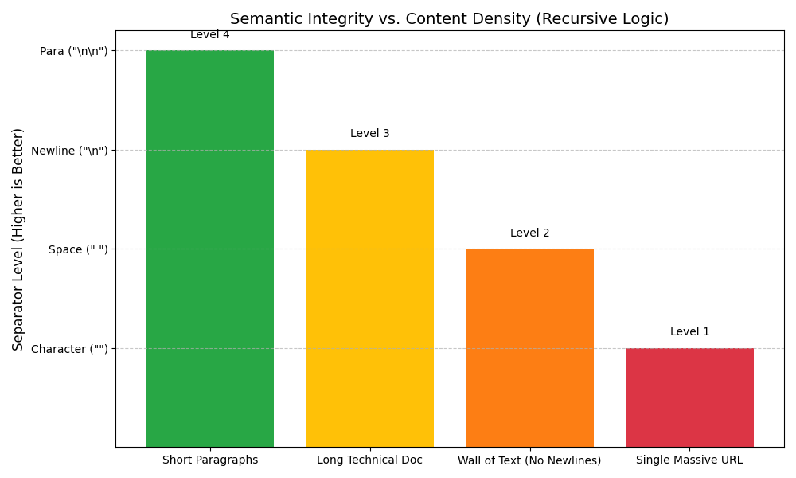
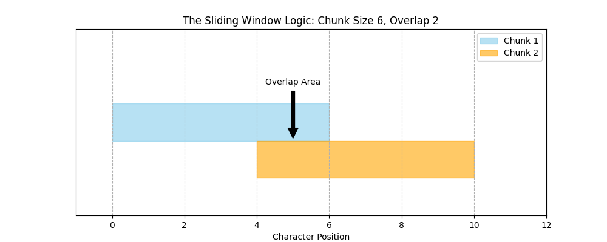
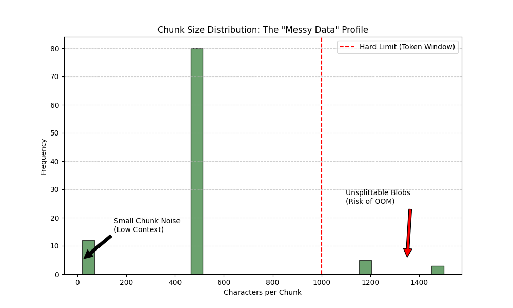

graph LR
A[Raw Document] --> B{Fits in \n \n?}
B -->|Yes| C[Keep Paragraph]
B -->|No| D{Fits in \n?}
D -->|Yes| E[Keep Line]
D -->|No| F{Fits in ' '?}
F -->|Yes| G[Keep Word]
F -->|No| H[Split Character]
style C fill:#d4edda,stroke:#28a745
style E fill:#d4edda,stroke:#28a745
style G fill:#d4edda,stroke:#28a745
style H fill:#f8d7da,stroke:#dc3545
Structural Logic: Recursive & Separator Splitting
The Logic of Recursion: A Waterfall Model
The Context Problem
- LLMs have fixed Context Windows.
- Data must be sliced into chunks.
- The Risk: “Semantic Integrity” loss.
The Architect’s Solution
- Move beyond “Fixed-Length” ribbons.
- Adopt Recursive Structural Splitting.
- Prioritize human-readable boundaries.
The Separator Hierarchy
Documents are nested hierarchies, not flat strings.
- Level 1:
"\n\n"(Paragraphs/Sections) - Level 2:
"\n"(Individual Lines) - Level 3:
" "(Words) - Level 4:
""(Characters - The Last Resort)
The Architect’s Rule: Always split at the highest possible level to keep context together. Only move down if the chunk is still too large.
The Algorithm: “Try, Then Refine”
Goal: Maximize chunk size without exceeding the limit.
Visualizing the “Waterfall”
The Flow
- Text “pours” through filters.
- Only “overflow” moves down.
- Adaptive to content density.
Semantic Glue
- Prevents mangled words.
- Bad: “The capital is Par | is.”
- Good: “The capital is Paris.”
Logic in Action: Integrity vs. Density
Image: Bar chart showing Semantic Integrity vs Content Density. Paragraph level splits have higher integrity than character level splits.
The Architect’s Takeaway
- Recursive splitting is adaptive.
- It avoids “one-size-fits-all” logic.
- It respects natural language boundaries.
- Reliability First: It only degrades to aggressive splitting when the context window is threatened.
Implementing RecursiveCharacterTextSplitter
- From Blueprint to Studio: Moving from theory to production-grade implementation.
- The Goal: Designing a data pipeline where chunks are digestible yet contextually rich.
- The Tool: LangChain’s
RecursiveCharacterTextSplitter.
The Two Pillars of Configuration
1. Chunk Size
- The Resolution
- Maximum characters/tokens per chunk.
- Too Small: Loss of “Big Picture.”
- Too Large: Risk of context window overflow.
2. Chunk Overlap
- The Safety Margin
- Text shared between consecutive chunks.
- The Logic: Prevents cutting meaning in half.
- Acts as a “Context Bridge.”
The Default Hierarchy
The splitter uses a prioritized list of separators to maintain semantic unity.
graph LR
A[Raw Document] --> B{"Split by '\n\n'?"}
B -- Fits Chunk Size --> C[Final Chunk: Paragraph]
B -- Too Large --> D{"Split by '\n'?"}
D -- Fits Chunk Size --> E[Final Chunk: Line]
D -- Too Large --> F{"Split by ' '?"}
F -- Fits Chunk Size --> G["Final Chunk: Words/Sentences"]
F -- Too Large --> H[Split by Character]
style C fill:#d4edda,stroke:#28a745
style E fill:#d4edda,stroke:#28a745
style G fill:#d4edda,stroke:#28a745
style H fill:#f8d7da,stroke:#dc3545
- Double Newline: Keeps paragraphs intact.
- Single Newline: Keeps sentences/list items together.
- Space: Keeps words whole.
- Empty String: Last resort (character-level split).
Visualizing the Sliding Window
The overlap ensures that meaning isn’t lost at the “seam.”
Image: A diagram showing Chunk 1 from character 0-6 and Chunk 2 from character 4-10, with a highlighted overlap area from 4-6.
The Architect’s Implementation
from langchain.text_splitter import RecursiveCharacterTextSplitter
# 1. Configuration
splitter = RecursiveCharacterTextSplitter(
chunk_size=100,
chunk_overlap=20,
separators=["\n\n", "\n", " ", ""]
)
# 2. Execution
chunks = splitter.split_text(document)
# 3. Inspection
for i, chunk in enumerate(chunks):
print(f"Chunk {i+1}: {repr(chunk)}")Logic Analysis: Why It Works
- Paragraph Preservation: If “Section A” fits in 100 chars, it stays as one unit.
- The “Hard” Limit: If a paragraph is 150 chars, the splitter drops to
\nto find a break point. - The Context Bridge: The 20-character overlap ensures Chunk 2 starts with a “hint” of Chunk 1.
The Insurance Policy: Unlike simple splitters, this method prevents the “Mid-Word Disaster” (e.g., splitting “Architecture” into “Archi” and “tecture”).
Recursive vs. Character Splitter
| Feature | Character Splitter | Recursive Splitter |
|---|---|---|
| Logic | Rigid / Fixed | Hierarchical / Adaptive |
| Word Integrity | High risk of mid-word cuts | Prioritizes word/sentence boundaries |
| Context | Often fragmented | Maintained via “Waterfall” |
| Use Case | Simple, uniform logs | Complex, structured documents |
Context-Aware Separators: Code & Markdown
- The Problem: Blunt instruments (
\n,\n\n) break logic. - The Goal: Context Preservation.
- The Risk: A split function is a “hallucination factory.”
- The Architect’s Rule: Structure must dictate the split.
Why Generic Splitting Fails
The “Flat String” Trap
- Treats Python like Prose.
- Breaks classes mid-definition.
- Separates headers from content.
The Result
- Chunk A:
class DataProcessor: - Chunk B:
def process(self): ... - LLM Context: Chunk B loses its “Parent” identity.
Code Splitting: AST-Aware Logic
- AST (Abstract Syntax Tree): The “skeleton” of your code.
- Hierarchy of Meaning:
class(Logical Container)def(Functional Unit)if/elif/else(Logic Branch)for/while(Iteration)
- The Strategy: Force the “Waterfall” to respect these keywords first.
Implementation: from_language
from langchain.text_splitter import RecursiveCharacterTextSplitter, Language
# Architect's Choice: Python-Specific Logic
python_splitter = RecursiveCharacterTextSplitter.from_language(
language=Language.PYTHON,
chunk_size=500,
chunk_overlap=50
)
# Logic: Breaks at \nclass, then \ndef, then \n\tdef
chunks = python_splitter.split_text(code_sample)Markdown: Headers as Hard Boundaries
- Markdown is the “Lingua Franca” of LLM Knowledge Bases.
- Header = Anchor: Without the
#, the paragraph loses its “Topic.”
graph LR
A[Markdown Doc] --> B{Split at H1 #}
B -- Too Big? --> C{Split at H2 ##}
C -- Too Big? --> D{Split at H3 ###}
D -- Too Big? --> E[Recursive Text Splitting]
Metadata-Rich Splitting
- The Strategy: Don’t just split; Tag.
- Use
MarkdownHeaderTextSplitter. - Benefit: Every chunk “knows” its location in the document hierarchy.
| Content | Metadata |
|---|---|
“Run pip install…” |
{"Header 1": "Installation"} |
| “Set API_KEY in .env” | {"Header 1": "Configuration"} |
Architectural Pattern: The Splitter Router
- Anti-Pattern: One “Global Splitter” for all file types.
- The Pattern: Detect file extension \(\rightarrow\) Route to specialized logic.
graph LR
A[Raw Files] --> B{Router}
B -->|.py| C[PythonSplitter]
B -->|.md| D[MarkdownSplitter]
B -->|.txt| E[RecursiveSplitter]
- For Code: Prioritize
classanddef. Never split a single line. - For Markdown: Use headers as primary boundaries; inject into metadata.
- For Data (JSON): Respect delimiters (brackets/keys) to avoid invalid syntax.
Section 4: Edge Cases
The Unsplittable Chunk
- The “Happy Path” vs. Reality: Production data is rarely clean prose.
- Architect’s Responsibility: Build systems that don’t crash on “messy” data.
- The Goal: Prevent OOM (Out of Memory) errors and Semantic Noise.
The ‘Unsplittable’ Problem
When Delimiters Disappear
Common Culprits
- Deep Links: 5,000+ char tracking URLs.
- Base64 Blobs: Images embedded in JSON.
- DNA Sequences: Continuous
AGCTstrings. - Log Files: Massive lines without whitespace.
The Logic Failure
- Splitter looks for
\n, then" ", then.. - If none found: The chunk exceeds your limit.
- Result: API Error or Dimension Mismatch.
The “Emergency Brake” Strategy
Implementing Hard Character Splits
- The Fallback: Use the empty string
""as the final separator. - The Guarantee: If no semantic break exists, cut exactly at the character limit.
Small Chunk Noise
The “Tail” of the Recursion
- The Scenario: A 1,050-char doc split into 500-char chunks leaves a 50-char “tail”.
- The Problem: “Contact us at support@example.com” has no context.
- The Impact: These “noisy” chunks waste space in the context window.
The Architect’s Fix: Post-Processing
- Discard: Remove chunks below a threshold (e.g., < 100 chars).
- Merge: Append the tiny “tail” to the previous chunk.
Visualizing Failure Modes
The “Messy Data” Profile
Image: A histogram showing chunk size distribution. Most chunks are at the target size, but there are spikes at the very low end (noise) and the very high end (unsplittable blobs exceeding the red hard-limit line).
The Architect’s Stress Test
Evaluation Heuristic
| Metric | Question | Danger Zone |
|---|---|---|
| Overflow Rate | Any chunks > chunk_size? |
OOM Risk |
| The 10% Tail | >10% of chunks < 100 chars? | High Noise |
| Header Isolation | Chunk ends with a Title only? | Broken Context |
| Mid-Code Split | Logic cut in the middle? | Logic Failure |
Logic Flow: Robust Splitting
graph LR
A[Input Text] --> B{Has Separators?}
B -- Yes --> C[Recursive Logic]
B -- No --> D{Length > Limit?}
D -- Yes --> E[Hard Char Split]
D -- No --> F[Single Chunk]
C --> G{Too Small?}
E --> G
G -- Yes --> H[Merge or Discard]
G -- No --> I[Vector DB]
H --> I
F --> I
Summary: The Architect’s Word
- Never trust your data: Production data is hostile.
- System Reliability > Semantic Integrity: Better to cut a URL in half than to crash the server.
- Filter the Noise: Post-process your chunks to ensure quality retrieval.